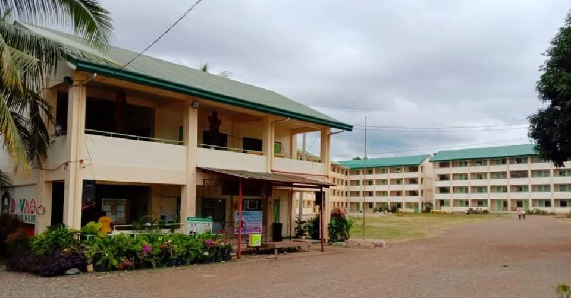

LOS AMIGOS NATIONAL HIGHSCHOOL
1967
The LANHS (Los Amigos National Highschool) was build in 1967 and located in Los Amigos Tugbok district davao city, It is a public school and is a junior and senior high school. It has four TVL strands this are ICT,FBS,Agriculture,and Caregiving for students to enhance their knowlegde and skills
